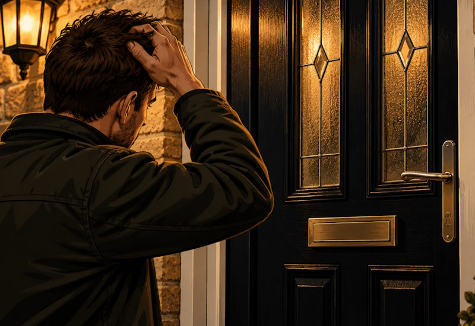
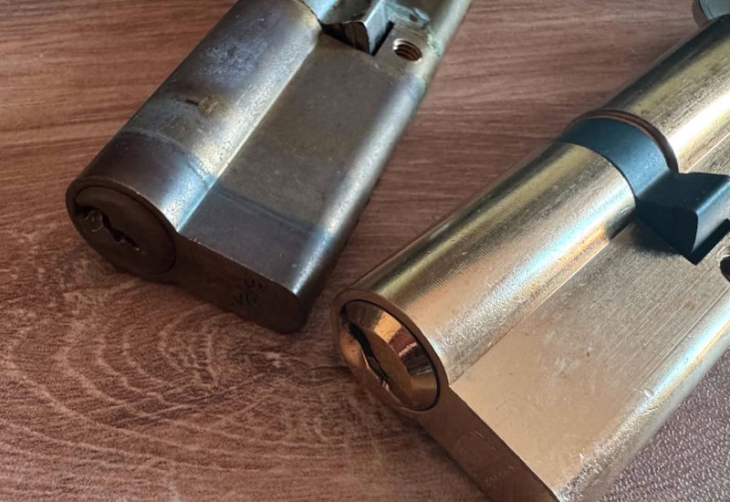
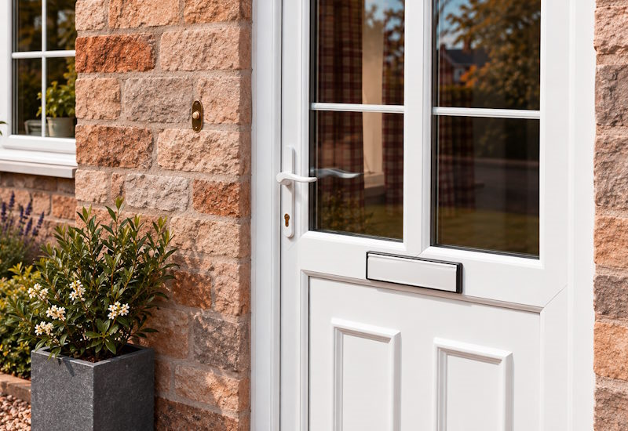
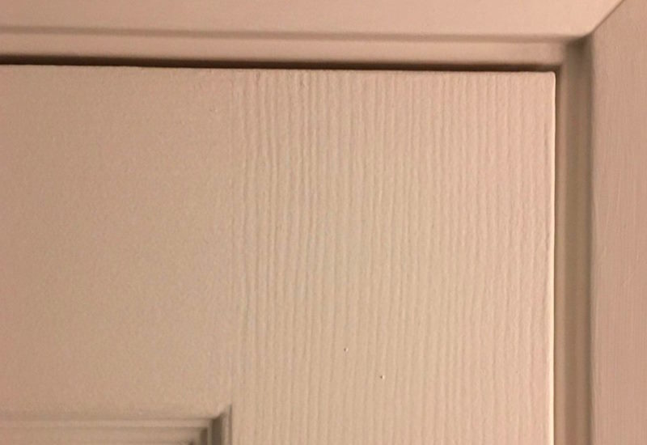
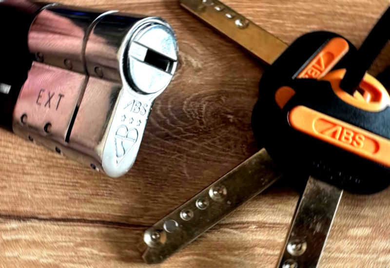
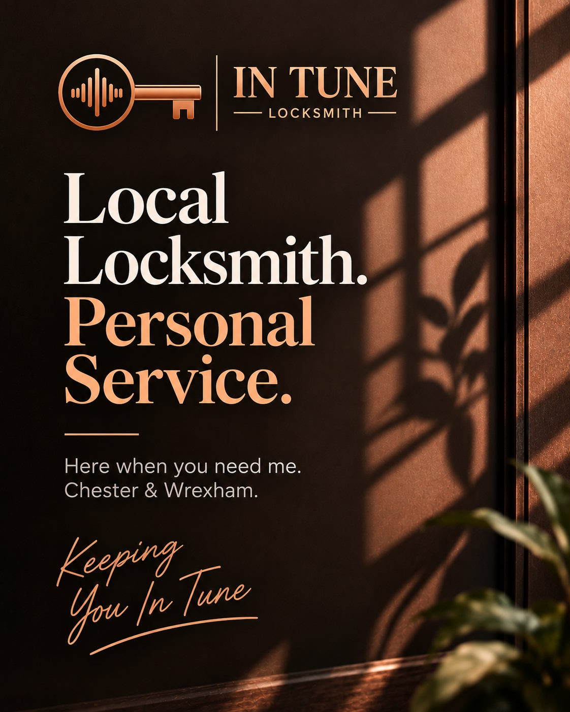

Emergency Lockouts
Assistance when you are locked out because of lost keys, a faulty lock or a door that will not open. Non-destructive entry methods are used wherever possible.
Local independent locksmith
Hi, I'm Dan, the owner of In Tune Locksmith. I started the business because I enjoy solving problems and helping people when they're locked out or need to improve the security of their home. Whether it's replacing a faulty lock, gaining entry without unnecessary damage, or simply offering honest advice, I believe in taking the time to do the job properly.
I understand that needing a locksmith can often be stressful, especially when you are locked out or dealing with a lock that has unexpectedly failed. My aim is to make the process as straightforward as possible by explaining the available options clearly, treating your property with care and never recommending work that is not genuinely needed.
As a local independent locksmith, the quality of my work and the way I treat each customer are important to me. You will deal directly with me from the first conversation through to the completion of the job.

Clear explanations and practical options without unnecessary work or pressure.
Your door, locks and property are treated with care throughout the job.
Speak directly with the locksmith carrying out the work from beginning to end.
Practical locksmith services
From gaining entry when you are locked out to replacing faulty locks and adjusting misaligned doors, I provide straightforward solutions with careful workmanship and honest advice.

Assistance when you are locked out because of lost keys, a faulty lock or a door that will not open. Non-destructive entry methods are used wherever possible.

Replacement of faulty, damaged or outdated locks with suitable new hardware, helping to restore reliable operation and improve the security of your property.

Assessment and replacement of faulty cylinders, handles, gearboxes and multipoint locking components commonly found in uPVC and composite doors.

Help with dropped or misaligned doors, stiff handles, sticking locks and doors that no longer close or secure correctly.

Practical advice and suitable upgrades for improving home security, including stronger replacement cylinders and modern locking hardware.
Trusted local service
When you call a locksmith, you are trusting someone with the security of your home.
That is why I focus on honest advice, quality workmanship and taking the time to get every job right. You will receive a professional and respectful service, with clear recommendations based on what is genuinely best for your property.

Customer feedback
Nothing speaks louder than the experience of previous customers. Here are a few examples of the kind of feedback I aim to earn on every job.
“Dan arrived quickly, explained the problem and had the same replacement parts fitted in no time.”
Local locksmith coverage
In Tune Locksmith currently provides local locksmith services throughout Chester, Wrexham and the surrounding areas.
Chester and nearby communities.
Wrexham and nearby communities.
Unsure whether your location is covered? Call to check availability.
Get in touch
Call In Tune Locksmith to discuss the problem and find the most suitable next step.
Whether you are locked out, need a lock replaced or are having trouble with a door that no longer closes or locks correctly, I will provide clear advice and let you know how I can help.
Clear prices with no surprises
I believe locksmith pricing should be clear before work begins. That's why I publish my prices, so you can see the normal cost of common work and out-of-hours attendance in advance.
This is especially important when so many locksmith adverts promote headline prices such as "from £49". While these prices may look appealing, what starts as a cheap call-out can quickly become a bill of £200, £300 or more once the locksmith arrives. I don't work that way. I'll confirm the price before work begins, and if anything genuinely changes, I'll explain it and agree any additional cost with you before continuing.
Price Guarantee
A standard job taking longer than expected will not create an unexpected extra charge. If additional parts or genuinely additional work are needed, the price will be explained and agreed before I continue.
Non-Destructive Entry First
Non-destructive entry is used wherever reasonably practical and appropriate. If an otherwise serviceable lock is accidentally damaged as a direct result of an agreed non-destructive entry attempt, I will replace it with an equivalent lock at no additional cost.
This guarantee does not apply to locks that were already faulty, damaged or non-serviceable, or where destructive entry has been explained and agreed beforehand.
Emergency callouts
Specialist pricing is only used for genuinely specialist or high-security locks requiring additional skill, time or equipment. An ordinary lock taking longer than expected does not qualify for an increased charge.
Out-of-hours transparency
These exact times are stated deliberately for transparency. Special-date surcharges do not stack: the normal applicable time-band rate is used with one special-date surcharge.
Supply & fit
Traditional door locks
Existing mortice preparation
Fresh from-scratch mortice installations are not currently offered. Existing preparations and keeps can be altered where reasonably required for a suitable replacement lock.
Modern door hardware
Where a failed part can be identified and replaced during the same straightforward visit, I will quote a sensible complete repair price rather than automatically adding a separate diagnosis charge.
Other common work